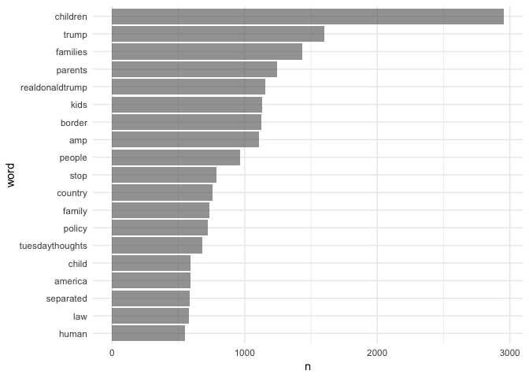
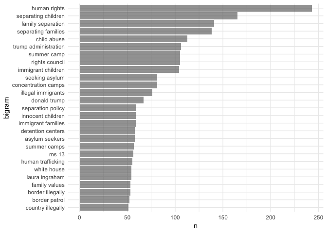
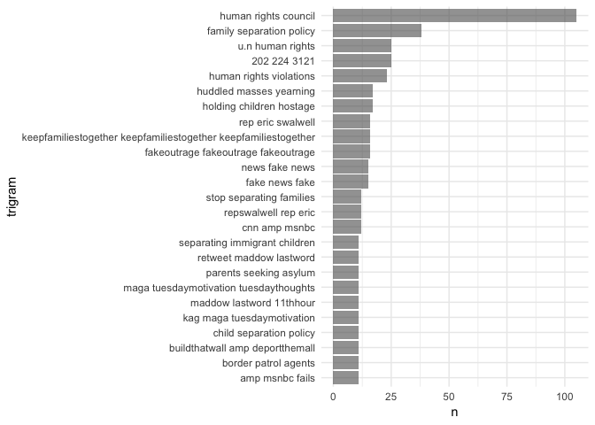
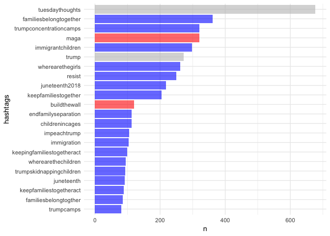

Looking into #KeepFamiliesTogether
Contents
This week I’m at the Seattle branch of the Summer Institute on Computational Social Science. Today, we discussed digital trace data and spent some time thinking about different sources of digital trace data. One of the easiest sources is twitter, and thanks to Mike Kearney, it’s easily accessible in R via the {rtweet} package!
I joined a group addressing a topic I find myself dwelling on throughout the day - the immigration crisis at the border. I worked with my colleague Sondra Stegenga, an early childhood professional and researcher/data scientist in training, who is helping me write this post. Basically, we wanted to look into what people were saying about the issue on twitter. This is an immense issue of interest given our passions for education, which includes the impacts of early trauma and family supports on long term outcomes. Specifically, we know that early attachment and early relationships directly link to long term school and life outcomes (e.g. Building the Brain’s Air Traffic Control - Center on the Developing Child at Harvard University or The Importance of Caregiver-Child Interactions for the Survival and Healthy Development of Young Children - A Review). Therefore, hearing about these separations not only rocks our souls from a foundational human level but we also know the likely long term negative impacts on the children, families, and our country and global community in the years to come.
Loading the Packages and Getting the Data
In this post, we’ll use the {tidyverse} suite of packages, {rtweet}, and the {tidytext} package by Julia Silge and David Robinson.
library(tidyverse)
library(tidytext)
library(rtweet)
We used the search_tweets function to search for the hashtag #KeepFamiliesTogether. We pulled as many tweets as we could, given rate limits from the searches we’d already made. This left me (Daniel) with roughly 15,000 tweets.
sep <- search_tweets("#KeepFamilesTogether", n = 18000, include_rts = FALSE)
I’ve since saved this file, which you can access here. You’ll want to download it and then read it in using code similar to the below.
sep <- readRDS("keepfamiliestogether_2018-06-19.rds") %>%
as_tibble()
The data has a lot of columns, but the primary ones we’ll be interested in are the screen_name, text, and hashtags.
sep <- sep %>%
select(screen_name, text, hashtags)
sep
## # A tibble: 14,913 x 3
## screen_name text hashtags
## * <chr> <chr> <list>
## 1 annwallack Maybe we need some PTA moms at the border who… <chr [1…
## 2 annwallack Similar to the hasty “Muslim ban” this separa… <chr [1…
## 3 Kristin75092375 Dear #Feckless , you may be Pres, but every N… <chr [3…
## 4 qantasbird @YAppelbaum @juliaioffe @mckaycoppins Nope, h… <chr [2…
## 5 qantasbird "@copperbird7 Ah, but his \"orders\". #KeepFa… <chr [1…
## 6 qantasbird @seungminkim @realDonaldTrump #KeepFamilesTog… <chr [1…
## 7 qantasbird @RepSwalwell Thank you. Keep fighting the goo… <chr [2…
## 8 qantasbird @parscale @TGowdySC @realDonaldTrump #KeepFam… <chr [1…
## 9 qantasbird "@westratenick Tom is just \"following orders… <chr [1…
## 10 snugharborlabs @AceHardware - Your ads on Fox News tells the… <chr [1…
## # ... with 14,903 more rows
Evaluating Word Frequencies
The first thing we wanted to do is just look at the frequency of words. We did this using functions from {tidytext}. In the below, we’ll look at the most common individual words that were used in these ~15K tweets that included #KeepFamiliesTogether. We do this by using the unnest_tokens function, creating a new column called word, and feeding it the text column. This will split the sentences in the text column into individual words in a tidytext format, where each row represents a word.
words <- sep %>%
unnest_tokens(word, text)
words
## # A tibble: 343,568 x 3
## screen_name hashtags word
## <chr> <list> <chr>
## 1 annwallack <chr [1]> maybe
## 2 annwallack <chr [1]> we
## 3 annwallack <chr [1]> need
## 4 annwallack <chr [1]> some
## 5 annwallack <chr [1]> pta
## 6 annwallack <chr [1]> moms
## 7 annwallack <chr [1]> at
## 8 annwallack <chr [1]> the
## 9 annwallack <chr [1]> border
## 10 annwallack <chr [1]> who
## # ... with 343,558 more rows
Next, we need to remove common words, like “a”, “we”, “of”, etc. There are lots of ways to do this but the {tidytext} package provides a simple dictionary of common words, stored in the stop_words data frame. We can just do an anti_join with our twitter data frame and this one to remove these words from our tweets.
words <- words %>%
anti_join(stop_words)
## Joining, by = "word"
words
## # A tibble: 177,699 x 3
## screen_name hashtags word
## <chr> <list> <chr>
## 1 annwallack <chr [1]> pta
## 2 annwallack <chr [1]> moms
## 3 annwallack <chr [1]> border
## 4 annwallack <chr [1]> pin
## 5 annwallack <chr [1]> notes
## 6 annwallack <chr [1]> children
## 7 annwallack <chr [1]> parents
## 8 annwallack <chr [1]> names
## 9 annwallack <chr [1]> emergency
## 10 annwallack <chr [1]> contact
## # ... with 177,689 more rows
Notice the message says that it’s joining by “word”, which is a common variable in each each data frame.
Now, we just count the words.
counts <- words %>%
count(word, sort = TRUE)
counts
## # A tibble: 27,733 x 2
## word n
## <chr> <int>
## 1 keepfamilestogether 15287
## 2 https 6991
## 3 t.co 6991
## 4 children 2953
## 5 trump 1598
## 6 families 1434
## 7 parents 1243
## 8 realdonaldtrump 1153
## 9 kids 1133
## 10 border 1126
## # ... with 27,723 more rows
But notice we have a few things to clean up here still. We want to remove things like “https” from our counts. We also will remove “keepfamilestogether” because that should be in every tweet (and apparently, by the n, multiple times in some tweets). This is the approach we took.
counts <- words %>%
filter(word != "keepfamilestogether" &
word != "https" &
word != "t.co") %>%
count(word, sort = TRUE)
counts
## # A tibble: 27,730 x 2
## word n
## <chr> <int>
## 1 children 2953
## 2 trump 1598
## 3 families 1434
## 4 parents 1243
## 5 realdonaldtrump 1153
## 6 kids 1133
## 7 border 1126
## 8 amp 1108
## 9 people 966
## 10 stop 785
## # ... with 27,720 more rows
Finally, it would be good to plot this. To do so, we’ll have to limit the number of words we display or it will be incomprehensible. We’ll limit it to only words that were mentioned at least 500 times. To get the plot to display in descending order, We’ve also changed word to a factor, ordered by frequency. Combined with some ggplot magic we end up with
theme_set(theme_minimal())
counts %>%
filter(n > 500) %>%
mutate(word = reorder(as.factor(word), n)) %>%
ggplot(aes(word, n)) +
geom_col(alpha = 0.6) +
coord_flip()

And you can see things line up mostly how we would expect.
Where it gets more interesting, to us, is with the bigrams, or two-word phrases. The code is largely similar, but we add an additional argument to unnest_tokens to tell it to keep “ngrams” of 2. We also use anti-join twice to remove any bigram with a stop word. We also have to remove hashtags because unnest_tokens doesn’t like having lists in the data frame. In this case, We’ve also filtered for only bigrams used more than 50 times.
bigrams <- sep %>%
select(-hashtags) %>%
unnest_tokens(bigram, text, token = "ngrams", n = 2) %>%
separate(bigram, c("word1", "word2"), sep = " ") %>%
anti_join(stop_words, by = c("word1" = "word")) %>%
anti_join(stop_words, by = c("word2" = "word")) %>%
unite("bigram", c("word1", "word2"), sep = " ") %>%
filter(!grepl("keepfamilestogether", bigram)) %>%
filter(!grepl("https", bigram) &
bigram != "NA NA") %>%
count(bigram, sort = TRUE) %>%
filter(n > 50) %>%
mutate(bigram = reorder(as.factor(bigram), n))
ggplot(bigrams, aes(bigram, n)) +
geom_col(alpha = 0.6) +
coord_flip()

Now we get a much clearer view of what people using this hashtag are talking about. Three of the top four are all about separating children from their parents, while the top phrase is “human rights”. But you also see some of the evil side coming through here too, with phrases like “illegal immigrants”, “ms 13”, “country illegally”. (Yes, I [Daniel] said evil. Calling them the “other” side gives too much credence - as if there is room to debate about whether separating children from their parents is okay. It’s not. Period.)
Finally, let’s look at trigrams. We’ll filter to only those that were used more than 10 times.
trigrams <- sep %>%
select(-hashtags) %>%
unnest_tokens(trigram, text, token = "ngrams", n = 3) %>%
separate(trigram, c("word1", "word2", "word3"), sep = " ") %>%
anti_join(stop_words, by = c("word1" = "word")) %>%
anti_join(stop_words, by = c("word2" = "word")) %>%
anti_join(stop_words, by = c("word3" = "word")) %>%
unite("trigram", c("word1", "word2", "word3"), sep = " ") %>%
filter(!grepl("keepfamilestogether", trigram)) %>%
filter(!grepl("https", trigram) &
trigram != "NA NA NA") %>%
count(trigram, sort = TRUE) %>%
filter(n > 10) %>%
mutate(trigram = reorder(as.factor(trigram), n))
ggplot(trigrams, aes(trigram, n)) +
geom_col(alpha = 0.6) +
coord_flip()

Maybe my favorite one here is the fourth from the top, which is just some digits. If you search twitter for those digits, you may find some tweets like these
The digits are a phone number to congress.
But there are some other interesting things in this display. We see an excerpt from the poem from the statue of liberty (“huddled masses yearning”) and plenty of other phrases indicating outrage and disapproval, with “human rights” being prominent, and other phrases in line with “stop separating families” (which appears near the middle).
But the evil side is again clearly represented here, perhaps moreso than in the bigrams. Right below a trigram made up of the hashtag repeated three times, we see essentially the opposite, with “fakeoutrage fakeoutrage fakeoutrage”, followed by “news fake news” and the similar “fake news fake”. Near the bottom we also see “buildthatwall amp deporthemall”.
Hashtags
Finally, we wanted to look into hashtags that coincided with #KeepFamiliesTogether. First, lets look at the structure of the tweets data frame a little more.
sep
## # A tibble: 14,913 x 3
## screen_name text hashtags
## * <chr> <chr> <list>
## 1 annwallack Maybe we need some PTA moms at the border who… <chr [1…
## 2 annwallack Similar to the hasty “Muslim ban” this separa… <chr [1…
## 3 Kristin75092375 Dear #Feckless , you may be Pres, but every N… <chr [3…
## 4 qantasbird @YAppelbaum @juliaioffe @mckaycoppins Nope, h… <chr [2…
## 5 qantasbird "@copperbird7 Ah, but his \"orders\". #KeepFa… <chr [1…
## 6 qantasbird @seungminkim @realDonaldTrump #KeepFamilesTog… <chr [1…
## 7 qantasbird @RepSwalwell Thank you. Keep fighting the goo… <chr [2…
## 8 qantasbird @parscale @TGowdySC @realDonaldTrump #KeepFam… <chr [1…
## 9 qantasbird "@westratenick Tom is just \"following orders… <chr [1…
## 10 snugharborlabs @AceHardware - Your ads on Fox News tells the… <chr [1…
## # ... with 14,903 more rows
Notice that the hashtags column is a list. Because it’s a list in a data frame, we would call it a list column. We can transform this list into a standard vector by using tidyr::unnest(), which should not be confused with tidytext::unnest_tokens. The former is just removing the list-column structure, essentially expanding the number of rows of the data frame, while the latter is doing a bunch of other operations to extract just the elements you want (words or ngrams). Let’s drop the actual text of the tweets and unnest the hashtags.
hashtags <- sep %>%
select(-text) %>%
unnest()
hashtags
## # A tibble: 30,292 x 2
## screen_name hashtags
## <chr> <chr>
## 1 annwallack KeepFamilesTogether
## 2 annwallack KeepFamilesTogether
## 3 Kristin75092375 Feckless
## 4 Kristin75092375 loser
## 5 Kristin75092375 KeepFamilesTogether
## 6 qantasbird KeepFamilesTogether
## 7 qantasbird KeepFamiliesTogetherAct
## 8 qantasbird KeepFamilesTogether
## 9 qantasbird KeepFamilesTogether
## 10 qantasbird KeepFamilesTogether
## # ... with 30,282 more rows
You can see right away that we have a bunch of "KeepFamilesTogether", which was part of our initial search criteria. So we’ll need to remove that, but otherwise we can now just count hashtags and look at frequencies, and we’ll see what other hastags are commonly used with #KeepFamiliesTogether. We also change all the hashtags to lower case so we don’t end up with separate entries for what was intended to have the same general purpose. We’ve also colored the bars here after doing some initial inspection so affiliation is more obvious (pro-Trump versus anti-family separation).
hashtags %>%
mutate(hashtags = tolower(hashtags)) %>%
filter(hashtags != "keepfamilestogether") %>%
count(hashtags, sort = TRUE) %>%
filter(n > 80) %>%
mutate(hashtags = reorder(as.factor(hashtags), n),
affiliation = case_when(hashtags == "maga" ~ "trumper",
hashtags == "buildthewall" ~ "trumper",
hashtags == "trump" ~ "unknown",
hashtags == "tuesdaythoughts" ~ "unknown",
TRUE ~ "anti")) %>%
ggplot(aes(hashtags, n, fill = affiliation)) +
geom_col(alpha = 0.6) +
coord_flip() +
scale_fill_manual(values = c("blue", "red", "gray")) +
guides(fill = FALSE)

We’ve colored the “trump” hashtag gray because it’s not immediately clear which affiliation these hastags belong to, and the truth is probably a mix. We had no idea what to do with the “tuesdaythoughts” hashtag but, because we did this on tuesday, it was prominant. The rest were pretty easy to classify. We have “maga” near the top, and “buildthewall” about in the middle. But all the rest are pretty clearly against this horrific policy.
But, we would also expect this to be the case when looking at a hashtag that is clearly against this policy. What would happen if we replicated this with, say, #MAGA? What would happen if we coded these tweets for sentiment? What proportion under each hashtag would be positive or negative? Stay tuned.
Author Daniel Anderson & Sondra Stegenga
LastMod 2018-06-19